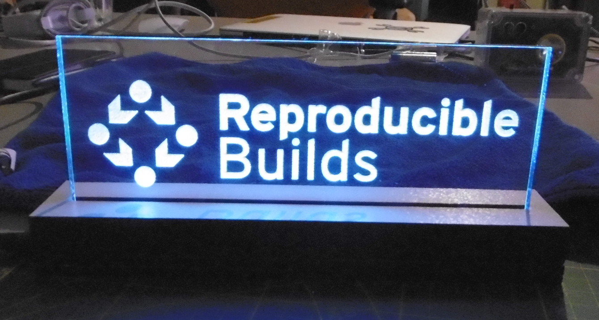
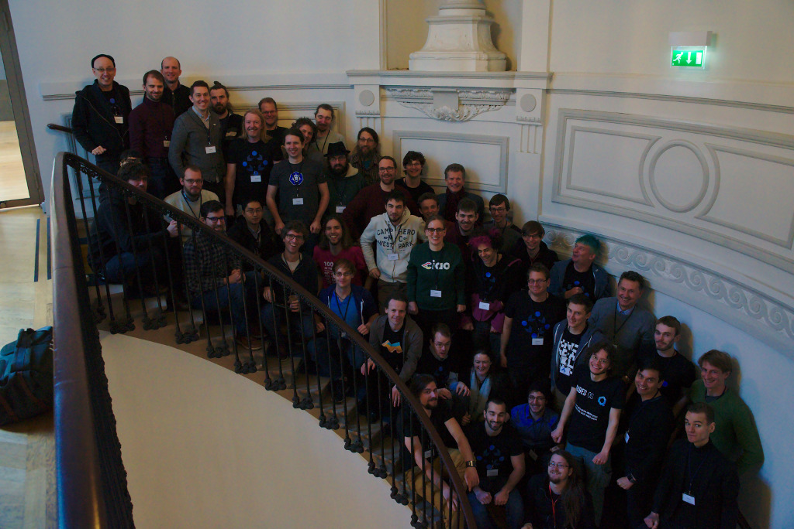

Aiming for bullseye!

Chris Lamb • Holger Levsen
Vagrant Cascadian

- Introduction
- Status updates
- Issues in detail
The problem
- Ignore the name!
- Source code of free software available
- …most people install pre-compiled binaries
- We have no idea whether they correspond.
Enter reproducible builds:
- If identical results are always generated from the source…
- …multiple parties reach consensus on a "correct" build.
New since DebConf18 Taipei
4th Reproducible Builds Summit in Paris

We are now a Conservancy project
Other projects
Arch Linux at ~80% reproducible packages
openSUSE at 93%
openSUSE and Arch Linux now included in tests.reproducible-builds.org database
(…)
Other projects (continued)
Alpine being tested since MiniDebConf Hamburg 2019
NetBSD and FreeBSD base systems at 100% for the base install
Tails 3.3, 3.6.1 → 100% reproducible ISO images
OpenWrt and coreboot images (most targets)
Collaboration is great
Lots of very nice, unexpected results...
Debian installer images
Lots of progress this year
mtools (#900409 & #900410)
src: debian-installer (#900918, #920631, #920676, #926242)
Status: Pending testing
diffoscope
Recursive and human-readable "diff" — locates and diagnoses reproducibility issues
195 files changed, 4887 insertions(+), 2065 deletions(-)
#871244, #888237, #894334, #901757, #901758, #901982, #902369, #903391, #903401, #903444, #903447, #903449, #903565, #904685, #905598, #905885, #906967, #907600, #908072, #908074, #908900, #908991, #913315, #916226, #916353, #920701, #926470 & many more…
strip-nondeterminism
Removes specific non-deterministic results from completed builds.
37 files changed, 275 insertions(+), 452 deletions(-)
Project website
New design with better "information architecture"
Monthy reports
Added better instructions on how to contribute
Debian buster
"Packages should build reproducibly" added in Debian Policy 4.1.0.0
Applied and unapplied patches
Build Path Variations
GCC -fmacro-prefix-map and -ffile-prefix-map
#include <stdio.h>
int main() {
fprintf(stderr, "error at %s line %l", __FILE__, __LINE__); return 1;
}
$ /usr/lib/gcc-snapshot/bin/gcc -o main /home/user/main.c
$ strings main | grep ^/
/lib64/ld-linux-x86-64.so.2
/home/user/main.c
dpkg-buildflags (1.19.1/Sep 2018)
DEB_BUILD_OPTIONS="reproducible=+fixfilepath"
Adds -ffile-prefix-map=BUILD_PATH=. to default GCC flags
Build Path Variations: The Present
macro-prefix-map is in gcc-8
... not enabled by default in dpkg-buildflags
Some buildsystems embed gcc commandline.
Some test suites rely on full paths
Only works with gcc, needs to be fixed in other tools
Simple workaround: rebuild in recorded path (testing/stable)
Ignore these issues for bullseye
Build Path Variations: The Future
BUILD_PATH_PREFIX_MAP
https://reproducible-builds.org/specs/build-path-prefix-map
https://wiki.debian.org/ReproducibleBuilds/GCC-build-path
Your fixes on important toolchains?
Debian is wrong
93% is a lie. We need infrastructure, processes and policies. (And testing. Currently we only have testing and a vague goal.)
With the upcoming list of bugs we
don't want to fingerpoint at individual teams,
instead I think we can only solve this if we as Debian
decide we want to solve it for bullseye.
I think this is not happening because people believe
things have been sorted out and we take care of them.
But we are not, we can't do this alone.
The difference between theory and practice
93% is a lie.
54% on March 5th 2019.
31% today.
We can still improve this, though 24% (6804) of our source packages have not been uploaded nor binNMUed since December 2016.
FIXME: I'm not sure I want to / we should upload >5000 source packages in the next 2 years. So mass binNMUs for the rescue? maybe do those mass uploads to experimental first? contra: more work
Major blockers, where to help
#869184
sbuild, dput, dpkg: source uploads including _amd64.buildinfo causes problems
#894441
binNMUs, mtimes and rsync(1) causes problems and binNMUs should be replaced by easy "no-change-except-debian/changelog-uploads"
blocker for #900837
release.debian.org: Mass-rebuild of packages for reproducible builds"
.buildinfo files
#862073
ftp.debian.org: Please POST .buildinfo files to buildinfo.debian.net
#763822
ftp.debian.org: please include .buildinfo file in the archive
#862538
security.debian.org: Please POST .buildinfo files to buildinfo.debian.net
.buildinfo files
buildinfo.debian.net
buildinfos.debian.net
.buildinfo files
buildinfo.debian.net: Allows submissions from everyone (PostgreSQL)
buildinfos.debian.net: ftp-master.d.o based view with pool structure and build date
.buildinfo files from an unofficial service?
There should be a debian.org machine serving .buildinfo files to the public.
Since December 2016: 965,333 files in total, eg 118,195 amd64 related.
12 GB files, 4 GB links.
User-facing interface
#863622
apt: warn when installing packages that are not reproducible
That would be great for bullseye, but...
The goal should be to not install nor to run unreproducible software.
in-toto could bring this to the next level
tests.reproducible-builds.org
Results saved in common database
.json for Debian, openSUSE, Arch Linux, OpenWrt, Alpine
shared notes, cross distro links
Two kinds of tests: CI tests (like we have now) and tests against what's on "ftp.(debian|archlinux|...).org"
Debian stretch
The "reproducible in theory but not in practice" release
Debian buster
The "we could be reproducible but we are not" release
Debian bullseye
The "we are almost there but still haven't sorted out..." release?
Debian bullseye
The release is still far away and we haven't frozen yet!
Ride like the wind, bullseye

Thank you and to all the contributors out there!
Vagrant Cascadian • Chris Lamb • Holger Levsen